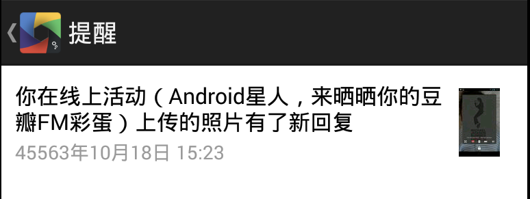

Rock with Android
安卓开发框架
Manifest
AndroidManifest文件定义了安卓应用的组成部分和各种安卓系统需要知道的信息。一个典型的应用一般是由n个Activity，0-n个Service，0-n个BroadcastReciver组成的。之后我们会了解到这些词的含义。
<?xml version="1.0" encoding="utf-8"?>
<manifest xmlns:android="http://schemas.android.com/apk/res/android"
package="com.hello"
android:versionCode="1"
android:versionName="1.0">
<uses-permission android:name="android.permission.INTERNET"/>
<uses-permission android:name="android.permission.WRITE_EXTERNAL_STORAGE"/>
<application android:label="@string/app_name" android:icon="@drawable/ic_launcher"
android:name="com.hello.HelloApplication">
<activity android:name="HelloActivity"
android:label="@string/app_name">
<intent-filter>
<action android:name="android.intent.action.MAIN" />
<category android:name="android.intent.category.LAUNCHER" />
</intent-filter>
</activity>
</application>
</manifest>
Application
上面的manifest，除了基本信息外，定义了权限，而且还定义了自己的Application类名。一个安卓应用对应着唯一的Application对象，而且一般情况下，也对应了一个进程。当然如果你的Service设置了单独的进程，那么你的App就不只是一个进程了。
Application的生命周期也就是应用本身的生命周期，所以一些全局的单例或者资源的变量可以放到Application里作为成员变量。因为static变量在安卓上面有生命周期和回收的问题，所以推荐放到Application的成员变量。
另外需要注意的是，Application的onTerminate()，在设备上并不会调用，所以清理操作，你需要自己处理。
Context
Context，中文多翻译成“上下文”，上面讲到的Application，Activity, Service其实都是他的子类。我个人理解，Context就是安卓系统把需要和应该暴露给应用的系统接口的一个封装。里面包含了很多接口，比如访问语言，图片，布局等资源，启动绑定Service，启动跳转Activity等等。
Activity
上面说过，一个Application对应一个应用，而一个应用是由一组Activity和其他东西组成的。什么叫Activity呢？
我打个比方，安卓的每个应用都像是一个网站，而网站是由一组网页组成的。你可以在同一个网站A里跳来跳去的浏览，而且如果一个网页里面有其他网站的一个超链接，你就跳到另外一个网站B了。当然你可以在B网站的网页跳来跳去，也能回退到网站A里玩。
所以Activity就像是网页，而超链接就是安卓里面的Intent。
Intent会在以后的章节里介绍，现在知道启动或跳转到一个Activity的方式就是调用Context的startActivity方法，参数是目的Activity所接受的Intent。Activity里一般都做什么呢？按照MVC的模式，是Controller的角色，但实际上其实有点类似iOS开发的ViewController的作用，包含了主要的业务逻辑和部分View层的逻辑。

上图是Activity的生命周期。一般在onCreate用setContextView来设置Layout，Activity一般对应一个Layout，当然是可以动态的换Layout的。安卓的另外还会通过findViewById完成各种View对象的赋值，绑定负责View事件的处理各种Listener。onResume一般是恢复上次打开时的状态，设置好相应的UI；onPause则是保存改保存的数据和状态；onDestroy释放一些资源等清理操作。
假设有两个Activity：A和B，那么从A点击一个按钮启动B，是用startActivity(new Intent(B.class)); 那么需要B里用户操作完了，返回A，并且带数据给A怎么办呢？ 那就是用startActivityForResult这个函数了。还有什么办法能在Activity直接来传递信息呢？具体会在Intent章节来讲。
顺便提一下，调用finish()函数就会关闭当前的Activity。
View
做安卓应用大部分时间都在和各种View打交道。在一个Activity里面你看到的各种控件都是View，比如Button, TextView, ImageView等等。安卓的View是一个树型的结构，可以认为每个Activity对应一棵树，具体什么样子呢？可以用sdk自带的Android Device Monitor (tools/monitor)来看具体层级结构。（之前的hierarchyviewer已经不建议用了。）
例如下面电台的主页面：
左边窗口的红色虚线框，表示当前选中的View，还是比较方便的。用这个工具可以优化View的层级，尽量减少嵌套，也可以学习其他app的思路。不过需要在manifest里设置成调试模式。
application android:debuggable="true"
Layout
Layout，本身其实也是View，只是可以作为其他View的容器
安卓比iOS出的晚，布局系统要比iOS强大一些。对比iOS的绝对定位，320点的座标，安卓提供了LinearLayout, RelativeLayout等布局，更灵活一些。因为安卓系统的碎片化以及设备的千奇百怪，UI适配是比较棘手的，所以设计具体的布局时就要考虑适配的问题。
安卓的布局使用XML来描述，我感觉像是一个简化的HTML盒模型，大部分是相通的，每个box有宽高和padding，margin等属性。最大的区别是没有流式布局，只有相对或绝对的定位方式。如果不指定具体的宽高，可以使用wrap_content/fill_parent来自动适应，而从2.3（API 8）开始，推荐使用match_parent了。下面是解释：
fill_parent -1 The view should be as big as its parent (minus padding).
This constant is deprecated starting from API Level 8 and
is replaced by match_parent.
match_parent -1 The view should be as big as its parent (minus padding).
Introduced in API Level 8.
wrap_content -2 The view should be only big enough to enclose its content (plus padding).
翻译成普通话，wrap_content是大小是包含内容的最小宽高，加上padding；match_parent是父元素减去padding的宽高。
RelativeLayout，是我自己用的比较多的布局。因为比较灵活的布局方式，也可以有效的减少层级。典型的定位方式是根据父元素的相对位置，或者相对于其他元素的位置。具体见RelativeLayout.LayoutParams。
LinearLayout，也是最常用的布局，尤其她可以按照比例来布局，很方便。比如上面的例子，一条提醒，可以分成左右两部分，右边的图片大小是固定的，左边是自动充满剩余的屏幕，只需要在左边的view加一个android:layout_weight="1.0"的属性就好了。下面是对于的布局文件：
<?xml version="1.0" encoding="utf-8"?>
<LinearLayout xmlns:android="http://schemas.android.com/apk/res/android"
android:layout_width="fill_parent"
android:layout_height="wrap_content"
android:orientation="horizontal"
android:padding="10dp"
android:gravity="center_vertical"
>
<RelativeLayout
android:layout_width="wrap_content"
android:layout_height="wrap_content"
android:orientation="horizontal"
android:layout_weight="1.0"
>
<TextView
android:id="@id/title"
android:layout_width="wrap_content"
android:layout_height="wrap_content"
android:textSize="16sp"
android:textColor="#000000"
android:paddingBottom="2dp"
android:layout_alignParentLeft="true"
android:layout_alignParentTop="true"
/>
<TextView
android:id="@id/time"
android:layout_width="wrap_content"
android:layout_height="wrap_content"
android:textSize="14sp"
android:textColor="#999999"
android:layout_below="@id/title"
android:layout_alignParentLeft="true"
android:layout_alignParentBottom="true"
/>
</RelativeLayout>
<ImageView
android:id="@id/icon"
android:layout_width="50dp"
android:layout_height="50dp"
android:scaleType="centerInside"
/>
</LinearLayout>
如果你对网站开发比较了解的话，可以看的到，很像HTML和CSS。类比网站的前端开发，HTML定义页面结构，CSS负责样式渲染效果，JS完成交互；安卓开发里面，Layout使用XML来定义，样式使用属性和style，交互就是java了。这个例子里很多样式属性，是不是很像inline的CSS？
Style/Theme
对于可以重用的样式组合，可以单独写到valuse/style.xml里面，通过style="@style/style_name"来引用，也比较符合前端的规范。更多可以到Styles and Themes仔细学习下。
<ImageView
android:id="@id/flag"
style="@style/flag"
/>
<resources>
<style name="flag">
<item name="android:layout_width">wrap_content</item>
<item name="android:layout_height">wrap_content</item>
<item name="android:layout_alignParentTop">true</item>
<item name="android:layout_alignParentRight">true</item>
<item name="android:src">@drawable/ic_flag</item>
<item name="android:visibility">gone</item>
</style>
</resources>
style可以继承，但是还没有真正的CSS那样强大。但是Activity在manifest里生命时或者在初始化时，可以指定使用一个Theme(主题。Theme其实类似style，但是她是作用于Activity而不是View，维度更大，所以包括一些窗体本身的属性也可以定制。比如下面的例子，就定义了一个透明背景并且全屏的主题。
<style name="Theme.Online.Transparent" parent="Theme.Sherlock.Light.DarkActionBar">
<item name="android:windowIsTranslucent">true</item>
<item name="android:windowNoTitle">true</item>
<item name="android:windowBackground">@color/transparent</item>
<item name="android:backgroundDimEnabled">false</item>
</style>
Fragment
Fragment现在比较流行和推荐的，是介于Activity和View之间的维度的。它像Activity一样，有自己的生命周期和栈，可以在不同Activity间复用，通过FragmentManager来管理。另外如果你的应用希望比较好的支持平板，用Fragment要比Activity要方便些。
个人观点是可以适度使用，也有的应用丧心病狂到只有一个主Activity外，全部使用Fragment。